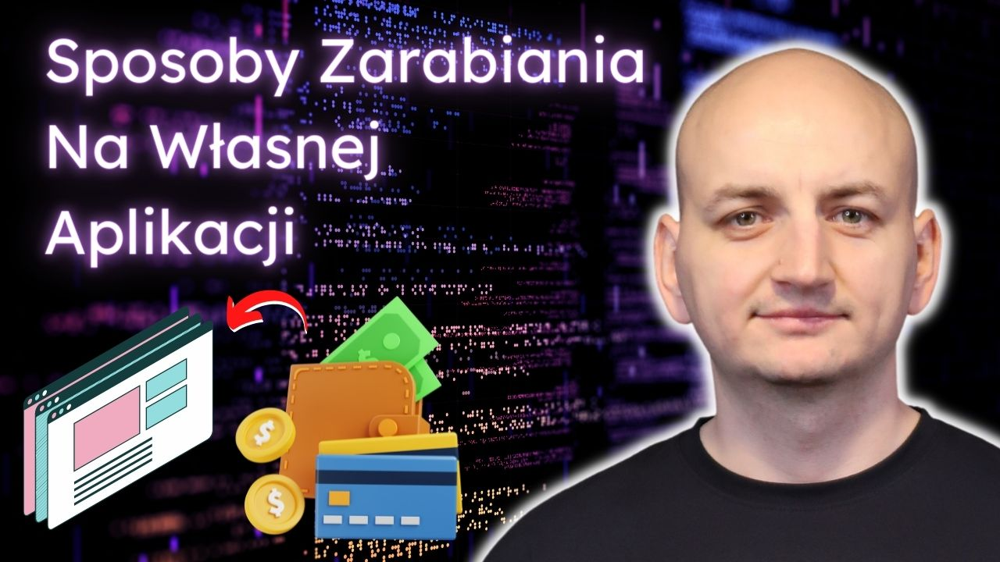

Różne Formy Zarabiania Na Aplikacjach
Tagi: Kariera Programowanie Własna AplikacjaTworzenie własnych aplikacji to jedna z najlepszych metod na zarabianie pieniędzy. Im lepsza i bardziej złożona, a przede wszystkim, im bardziej przydatna aplikacja, tym więcej można na niej zyskać. Celem programistów jest tworzenie rozwiązań użytecznych i atrakcyjnych dla potencjalnych odbiorców. Jednak na aplikacjach można zarabiać nie tylko poprzez ich tworzenie i sprzedaż. Rynek i wdrażane rozwiązania technologiczne dają wiele możliwości, z których można korzystać jednocześnie.
Samo zaprojektowanie aplikacji to za mało, by czerpać z niej zyski. Nie wystarczy też dobry pomysł (choć jest on istotny), zaangażowanie, czas i poświęcona uwaga. Kiedy rynek aplikacji nie był tak przesycony, te czynniki wystarczyły, by generować zyski. Nie każdemu też może się udać osiągnąć sukces. Kiedy aplikacja zostanie przygotowana i odbędzie się jej premiera, zaczyna się intensywna praca na rzecz zysków. Wtedy rozpoczyna się promocja, reagowanie na pojawiające się opinie użytkowników. Ważne jest również, by aplikacja była dopasowana do zmian zachodzących na rynku. Jeśli programista będzie działał sprawnie, wykaże się elastycznością i otwartością, będzie miał większe szanse na to, by czerpać zyski ze stworzonej aplikacji.
Aplikacja płatna
Stworzenie płatnej aplikacji jest jedną z najprostszych metod zarabiania na aplikacji. Może być
aplikacja mobilna, gdzie
w tym przypadku aplikacja udostępniona jest w sklepie, który pobiera za ściągnięcie aplikacji
20-30% jej ceny. Pozostałe
środki ze sprzedaży trafiają do autora aplikacji.
Jej cena uzależniona jest od kilku zasadniczych czynników:
- obszar działania aplikacji,
- przydatność w codziennym użytkowaniu,
- nisza, którą obejmuje swoim działaniem aplikacji (jeśli w taką niszę trafia),
- funkcjonalność i przejrzystość aplikacji,
- grupa, do której trafia aplikacja.
W tym przypadku płatność realizowana jest jednorazowo. Po uregulowaniu należności użytkownik ma
możliwość ciągłego
korzystania z aplikacji. Sporadycznie sklepy dają możliwość sprawdzenia tego czy pobrana
aplikacja
spełnia oczekiwania
użytkownika. Jeśli nie, ma on prawo do rezygnacji z zakupu. To daje większy komfort i
bezpieczeństwo
transakcji.
Innym przykładem płatnych aplikacji, mogą być oczywiście aplikacje webowe, np.
aplikacje SaaS.
W takich aplikacjach użytkownik płaci co wybrany okres cenę za subskrypcje, by móc korzystać z
takiej aplikacji.
Aplikacja darmowa
Sama aplikacja jest dla użytkowników bezpłatna, stanowi jednak dodatkowy kanał sprzedaży np. kursów, programów czy innych produktów. Użytkownik może korzystać z aplikacji w dowolny sposób. Są to często proste aplikacje przeznaczone do codziennego użytku, z których korzysta się w pracy, w domu, ale i do spędzania wolnego czasu. Wybór jest duży i praktycznie każdy znajdzie coś dla siebie. Aplikacje te stanowią alternatywę dla płatnych i bardziej rozbudowanych rozwiązań (które nie każdemu są potrzebne).
Aplikacja z reklamami
Aplikacja, która sama w sobie jest darmowa, ale wykorzystuje reklamy. Są one wyświetlane w czasie użytkowania danej aplikacji przez użytkowników. Aby reklama przynosiła oczekiwane zyski, trzeba wyświetlać ją przez określoną ilość czasu. Ważne jest, aby użytkownik miał stały dostęp do Internetu. Tylko w ten sposób będzie przynosić określone zyski. Inną formą zysków jest lokowanie produktów. Wówczas producent opłaca możliwość pokazania swojego produktu użytkownikom aplikacji. Im lepiej dobrana jest marka do typu aplikacji, jej charakteru, tym większe szanse na to, że użytkownicy aplikacji zdecydują się na zakup produktu.
In-app purchases
W przypadku tego modelu aplikacja może być darmowa, natomiast zyski czerpie się z kupowanych
dodatków. Jest to
szczególnie często stosowane w przypadku aplikacji z grami. Tutaj użytkownik w wersji darmowej
otrzymuje jedynie dostęp
do wersji podstawowej, chcąc przechodzić na wyższe poziomy lub korzystać z bardziej
zaawansowanych rozwiązań, należy
wykupić dodatkowe opcje. Choć sama aplikacja jest darmowa, to w rzeczywistości, korzystanie z
jej funkcji, wymaga
poniesienia kosztów.
Aplikacje tego rodzaju działają też w oparciu o subskrypcje. Płatność realizowana jest
regularnie w ustalonych odgórnie
odstępach czasu. Użytkownik wybierając daną aplikację ma świadomość, że musi opłacić abonament.
Samodzielnie może
zrezygnować z opłaty w dowolnym momencie.
Na tym nie koniec
Coraz bardziej popularną formą czerpania zysków z aplikacji jest realizacja aplikacji na zamówienie. Jako, że przy pomocy aplikacji można dotrzeć do szerszej grupy odbiorców, coraz więcej podmiotów decyduje się na tworzenie dedykowanych rozwiązań przeznaczonych dla klientów. Programista otrzymuje wynagrodzenie za przygotowanie aplikacji, za jej wdrożenie i przetestowanie (oraz ewentualną poprawę błędów). Zyski można czerpać od producentów urządzeń mobilnych, gdy tworzy się aplikacje dedykowane na konkretne urządzenia. Programiści dysponujący dobrym pomysłem, innowacyjnym rozwiązaniem, mogą liczyć także na wsparcie ze strony inwestorów szukających nietypowych oraz dobrze rokujących aplikacji.
Badania dochodów
Badania przeprowadzone przez GigaOM wskazują, że przeszło połowa deweloperów aplikacji mobilnych, którzy brali udział w badaniu (5000 osób), przyznaje, że uzyskuje dochody ze swoich płatnych aplikacji nie większe, niż 500 dolarów. Jeszcze trudniej ta sytuacja wygląda, jeśli chodzi o aplikacje, w których wielkość dochodów jest uzależniona od tego, ile wyświetlanych jest reklam. W tym przypadku, 1/3 deweloperów zarabia mniej, niż 100 dolarów, a jedynie 15% wszystkich twórców aplikacji generuje zysków na poziomie przynajmniej 5 tys. dolarów. 5% badanych czerpie zyski z aplikacji powyżej 20 tys. dolarów. Większość programistów specjalizujących się w tworzeniu aplikacji nie zarabiają na tym. Nie jest to dla nich najważniejsze źródło utrzymania. Identyczne wyniki uzyskano w badaniu przeprowadzonym przez Evans Data Corp. Wskazano w nim, że 26% deweloperów tworzących aplikacje sprzedawane poprzez sklepy z aplikacjami, faktycznie z tego zajęcia się utrzymuje, prawie połowa programistów (41%) tworzących aplikacje, to osoby pracujące na pełen etat, a kolejne 22% badanych to hobbyści dysponujący wiedzą i umiejętnościami, ale niepracującymi w zawodzie.
Podsumowanie
Niezależnie od tego, do czego aplikacja została stworzona, programista ma możliwość zarabiania na niej. Sam ustala sposób czerpania zysków. Wartość aplikacji jest jednak definiowana przez poziom zainteresowania aplikacją ze strony potencjalnych użytkowników oraz ogólnej jej przydatności.